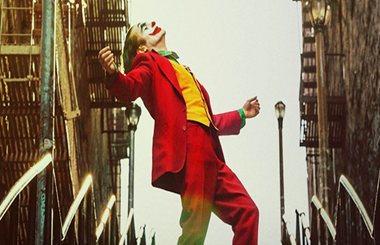

 Informações sobre o Filme: Tempo de Duração: 122 Minutos País: Estados Unidos da América Idioma: Inglês Lançamento: 31 de Agosto de 2019 Gênero: Drama, Policial, Thriller Classificação: 16+ Estreia no Brasil: 03 de Outubro de 2019 Título Original: Joker Direção: Todd Phillips
Resenha Crítica
Arthur Fleck é um palhaço que trabalha para uma companhia de palhaços, vive com sua mãe, faz acompanhamento psicológico e necessita de remédios controlados. Em filmes e histórias em quadrinho, ele costuma ser o vilão que comete diversas barbaridades e precisa ser contido pelos heróis. No entanto, nem sempre ele foi esse personagem, vários acontecimentos levaram-no a enlouquecer de vez e se tornar o Coringa. Arthur tinha uma vida normal e sem muitas conturbações, adorava seu trabalho e era determinado a se tornar humorista, porém já possuía comportamentos diferentes, visto que precisa tomar medicamentos controlados. É uma obra muito bem elaborada que instiga e prende o público com seus acontecimentos relacionados a esse personagem tão popular nos filmes de super-heróis. Diferentemente dos outros filmes que costuma chamar mais atenção das crianças, esse possui uma crítica social atrativa aos adultos, principalmente, por abordar sobre problemas psicológicos e movimentos sociais que estão sobremaneira presentes na sociedade atual.
Realizando seu trabalho, Arthur foi espancado por alguns meninos e isso fez com que ele recebesse reclamações de seu chefe, pois os garotos haviam quebrado a placa da loja para qual ele estava trabalhando. Com esse acontecimento, ganhou uma arma de seu colega de trabalho, pois, segundo ele, era necessário se defender. Por isso, ao se deparar com homens no metrô que esnobaram, afrontaram e quase espancaram-no, Arthur, ainda fantasiado de palhaço, matou esses homens, que eram importantes e conhecidos na elite local. Após esse fato, a população inicia um movimento contra a elite de Gotham, onde esses militantes usam máscaras de palhaço para fazer diversas reivindicações.
No entanto, a prefeitura local, com o intuito de cortar gastos públicos, suspende a verba destinada aos remédios e psicólogos para o tratamento de Arthur que simultaneamente, tem que lidar com sua mãe doente e revelações inusitadas sobre seu passado: a internação da mãe em um hospício e seu ex-namorado que abusava e espancava dele, além de que ele havia sido adotado. De acordo com Rousseau, um importante filósofo genebrino, o homem é naturalmente bom e a sociedade o corrompe. Trazendo esse fato para os acontecimentos do filme, a culpa por tudo de ruim que aconteceu na vida de Arthur é do corpo social e o mínimo que deveria ser feito para tentar consertar isso seria prestar a assistência necessária para que ele fosse tratado. Entretanto, isso lhe foi negado a partir do momento que houve cortes públicos em seu tratamento e a consequência foi sentida quando ele enlouqueceu.
No final da película, ao participar do programa de Murray Franklin e confessar todos seus crimes, ele faz a determinada pergunta para o apresentador: “O que você consegue quando cruza o doente mental solitário com a sociedade que abandona ele e trata como lixo esse cara? ”, essa fala diz muito sobre a participação social sobre a pessoa que ele se tornou.
Uma produção extraordinária que traz uma reflexão de como pessoas com doenças mentais são tratados, além de demonstrar a não participação e o desinteresse do governo em ajudar essas pessoas, destinada à toda população, pois transmite um ensinamento importante sobre essas questões com uma linguagem coloquial de fácil compreensão.
Temas Propostos
As dificuldades enfrentadas pelos doentes mentais: